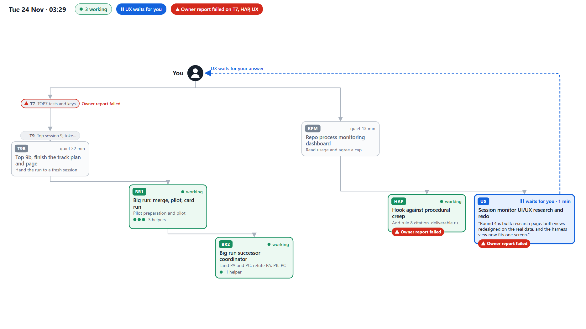
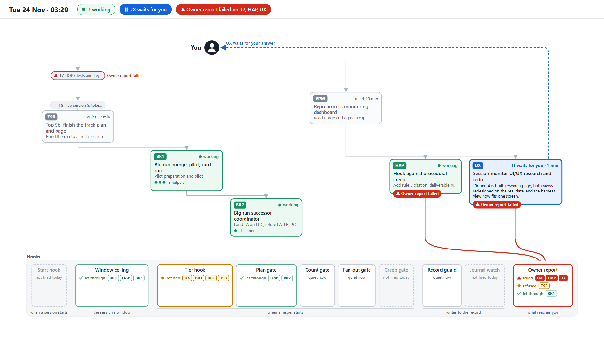
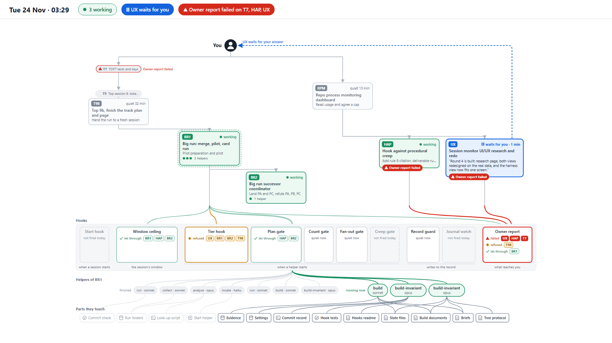
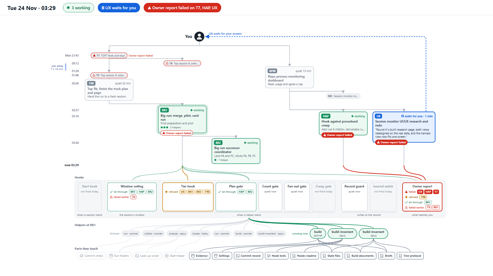
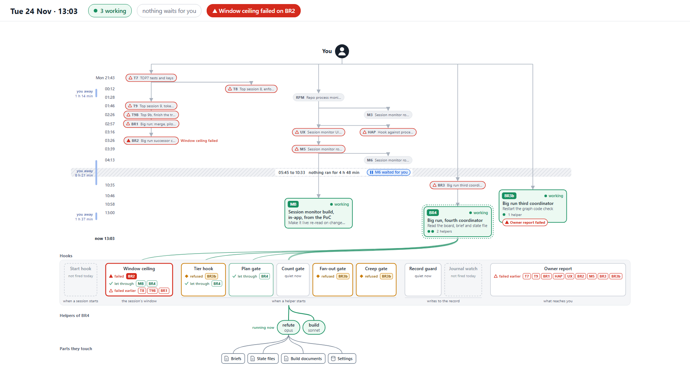

Session tool, round 9: proof of concept
Static pictures only, drawn from the real data of Tue 24 Nov 2026. Nothing is built. The same picture five times, each with one layer more: a process tree (you, then the sessions), standing on layers (hooks, helpers, parts).
The first four are 03:29, the crowded moment with a session waiting for you. That moment has no quiet stretch behind it, so the history layer is shown once more at 13:03.
0. Overview
You, the open sessions and who started whom: green is working, blue waits for you, red is a hook that failed.

1. With the hooks
The ten hooks by name, grouped by what each one checks; each lists the sessions it let through, refused or failed on.

2. With one session opened (BR1)
The helpers of BR1 by kind and model, finished and running, and the parts they touch.

3. With the history
The same tree with its clock: when each session started, the sessions that have ended, where a hook failed earlier, when you were away.

3 again, at 13:03
The same layers later in the day: the quiet stretch from 05:45 to 10:33 is one band with its length, and BR4 is the session opened.

Each picture opens its page. Why this picture: MAPPING.md. What is not done: NOTES.md.